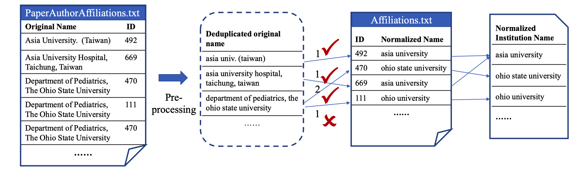
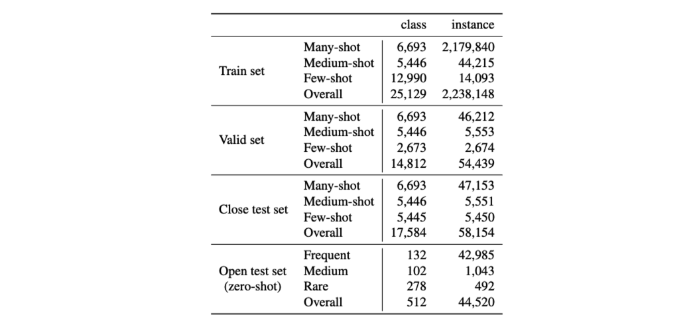

| Rank | Model | Macro-F1 | Accuracy |
|---|---|---|---|
|
1 Feb 15, 2023 |
Character-BERT + RS
SJTU LUMIA Qi et al., ICASSP'23 |
65.90 |
83.73 |
|
2 Feb 15, 2023 |
BERT + RS +FP
SJTU LUMIA Qi et al., ICASSP'23 |
65.14 |
84.00 |
|
3 Feb 15, 2023 |
BERT + RS
SJTU LUMIA Qi et al., ICASSP'23 |
63.98 |
83.40 |
|
4 Feb 15, 2023 |
BERT
Google AI Language Devlin et al., NAACL'19 |
62.79 |
83.30 |
|
5 Feb 15, 2023 |
CompanyDepot v1
CareerBuilder Liu et al., KDD'16 |
59.64 |
79.97 |
|
6 Feb 15, 2023 |
sCool
CareerBuilder Jacob et al., CTS'14 |
52.41 |
76.72 |
|
7 Feb 15, 2023 |
Naive Bayes
The RAND Corporation Melvin Earl Maron, JACM'61 |
50.20 |
72.20 |
|
8 Feb 15, 2023 |
FastText
Facebook AI Research Joulin et al., EACL'17 |
44.38 |
74.93 |
Real-world data usually exhibits a long-tailed distribution, with a few frequent labels and a lot of few-shot labels. The study of institution name normalization is a perfect application case showing this phenomenon: there are many institutions around the world with enormous variations of their names in the publicly available literature. In this work, we first collect a large-scale institution name normalization dataset LoT-insts, which containing over 25k classes whose frequencies are naturally long-tail distributed. We construct our test set from four different subsets: many-, medium-, and few-shot sets, as well as a zero-shot open set, which are meant to isolate the few-shot and zero-shot learning scenarios out from the massive many-shot classes. We also replicate several important baseline methods on our data, covering a wide range from search-based methods to neural network methods that use the pretrained BERT model. Further, we propose our specially pretrained, BERT-based model that shows better out-of-distribution generalization on few-shot and zero-shot test sets. Compared to other datasets focusing on the longtailed phenomenon, our dataset has one order magnitude more training data than the largest existing long-tailed datasets and is naturally long-tailed rather than manually synthesized. We believe it provides an important and different scenario to study this problem. To our best knowledge, this is the first natural language dataset that focuses on this long-tailed and open classification problem.
LoT-insts contains over 25k classes whose frequencies are naturally long-tail distributed. Its test set from four different subsets: many-, medium-, and few-shot sets, as well as a zero-shot open set. To our best knowledge, this is the first natural language dataset that focuses on this long-tailed and open classification problem.
We partitioned the dataset into different subsets for training and evaluation. The open test set was collected by randomly sampling 2% of the categories. Thus the model will not see any examples from these categories during training. For the two close test set and valid set, we randomly sample 2% of the examples from the remaining data for each of the sets. To better handle few-shot categories, we conduct extra steps to ensure that there is at least one example in training set for each category in the test set, and the test set covers as many categories as possible.
Please send your result and paper link to this email, we will update your results. Thank you.
@article{Qi2023Text,
title={Text Classification in the Wild: a Large-scale Long-tailed Name Normalization Dataset},
author={Jiexing Qi and Shuhao Li and Zhixin Guo and Yusheng Huang and Chenghu Zhou and Weinan Zhang and Xinbing Wang and Zhouhan Lin},
journal={ArXiv},
year={2023},
volume={abs/2302.09509}
}